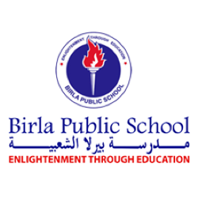

My School
Oprah Winfrey Quoted this sentence Education is the key to unlocking the world, a passport to freedom. Isn’t this true? Schools are indeed the best part of a person’s life. In my life I have come across many school and the best of those are indian public School in oman and birla public school doha qatar but the best of these two schools is birla public school. it is the best school in the whole city. it is a massive school with a fotball ground a swimming pool , a badminton court a cricket pitch and a baseball and basketball court and a library too. Our school has a very kind ,caring and joyful principal and his name is mr. A.P sharma. our school has many award for many activities. they are also one of the best school with many good studying student. I like the school for many reasons like conducting many fun and interesting activities, for maintain the school very clean, for many good teachers and different methods of teaching.It would be only fit to call my school my second home. After all, it is the place where I spend most of my time after my home. Not only that, the atmosphere in my school is so comfortable that it makes me feel at home.
I have always loved attending school and never miss out on an opportunity to do so. Further, it is my second home also because I have my friends here who are nothing less than family to me. Thus, they make my school life easier and full of joy. It is truly a blessing to have them in my life.
How birla public school was found
The School was founded in April, 2004 under the aegis of the Birla Group, to cater to the needs of the expatriate Indian community, at a time when quality educational institutions were few and rare in Qatar. It was necessary to mould a student community that adapts to the global as well as the national scenario.
"The institution is managed by its patron, H. E. Sheik SaoudBin Abdul Rahman Al Thani; Mr. Gope Shahani, the Chairman; Ms. Maria Thomas, the Vice-Chairman; Mr. R. K. Dalmia, Mr. Mohan Thomas, Mr. C.V. Rappai and Mr. Lukose Chacko, the Directors.
The founders of the school had envisioned that today’s youngsters could best serve our country and the world if the multiplicity of their talents and intelligence are properly channelized.
our logo

Our Mission
"To provide students with opportunities to acquire dynamic 21st century skills, competencies, discipline and innovativeness and to empower them to be capable of protecting environment, promoting moral and cultural values, preserving traditions and safeguarding the security and equal opportunities of all.
Our Vision
"To nurture a global citizenry on the principles of intellectual and aesthetic excellence in the service of humanity, common good on the path of truth and enlightenment and to be instrumental in achieving Qatar National Vision 2030, as a part of the Global Vision
our motto
Enlightenment through Education.